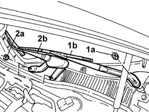

5050B34 WINDSCREEN WIPER ARM(S) for front windscreen wiper complete with blade
- Path
- Procedures > 50 auxiliary units > 5050 screen washers and headlamp wash/wipe > 5050B WINDSCREEN WASH/WIPE > 5050B34 WINDSCREEN WIPER ARM(S) for front windscreen wiper complete with blade
- Kind
- repair procedure (removal / refitting; the operation number is the code)
- Applies to
- all engines; all production periods
- Interactive page
- https://sloeber94.github.io/elrnDB-lThss/en/#/159408
Applies to: all engines; all production periods
 Removing
Removing
 Refitting
Refitting- Open the bonnet.
See in Op. 7040D50 ENGINE COMPARTMENT UPPER SOUND INSULATION SHIELD - R.R.
1. Undo the nut (1a) and remove the windscreen wiper arm (1b), driver's side.
2. Undo the nuts (2a) and remove the windscreen wiper arm (2b), passenger side.

Applies to: all engines; all production periods
Refitting
Removing- Fit the driver's side windscreen wiper in its housing and tighten the fixing nut to torque.
 | Value - daNm | Fastening | Component | Ø |
|---|---|---|---|---|
. | (driver) 2.3 | Nut | WINDSCREEN WIPER ARM/S | M10 X 1.25 |
- Fit the passenger side windscreen wiper in its housing and tighten the fixing nuts to torque.
| Value - daNm | Fastening | Component | Ø |
|---|---|---|---|---|
. | (passenger) 1.65 | Nut | WINDSCREEN WIPER ARM/S | M8 |
See in Op. 7040D50 ENGINE COMPARTMENT UPPER SOUND INSULATION SHIELD - R.R.
- Close the bonnet.
Topics linked from this page (1)
Topics that link to this page (8)
- 4130B10 POWER ASSISTED STEERING FLUID RESERVOIR - R.R. - Includes bleeding air
- 4130B34 Supply PIPE from fluid RESERVOIR to POWER ASSISTED STEERING PUMP - R.R. Includes bleeding air
- 4130B82 Rubber PIPE from rigid return pipe to fluid reservoir - Includes bleeding air
- 5050B32 Front windscreen WIPER ARM/S - R.R.
- 5050B42 Front windscreen wiper MOTOR - R.R.
- 5505C26 ENGINE COMPARTMENT built in wiring - R.R.
- 7035A18 Rearscreen WINDOW GLASS (bonded type) - R.R. for Replacement - Includes cleaning housing in bodyshell
- 7055A18 Winsdcreen base TRIM - R.R.